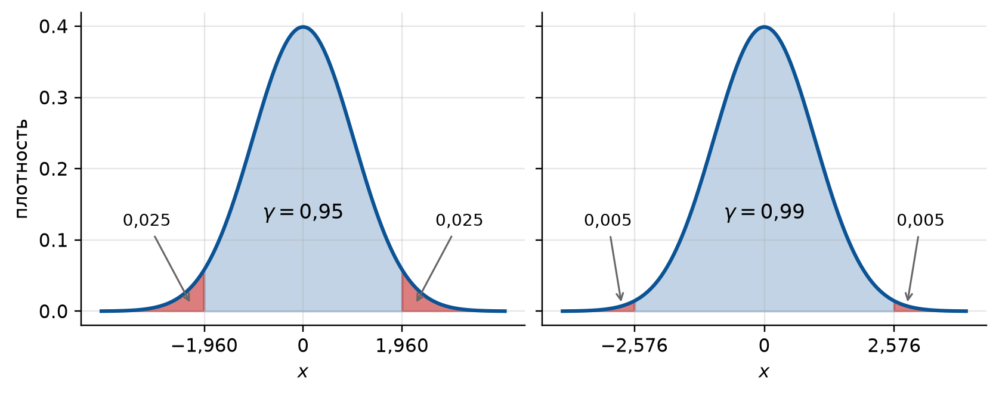
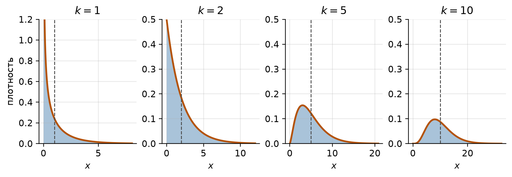
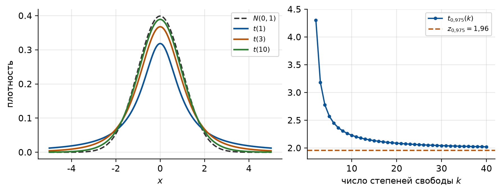
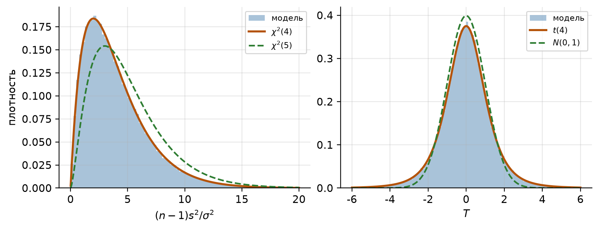
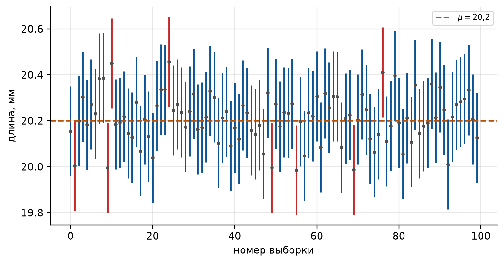
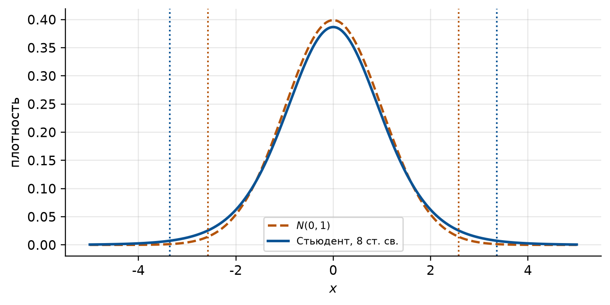
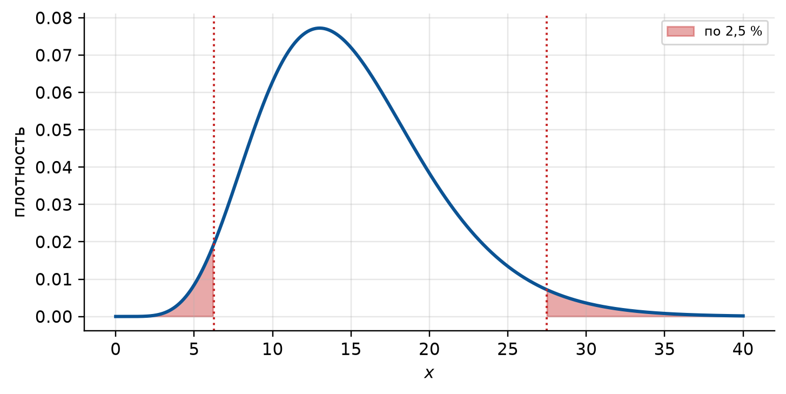
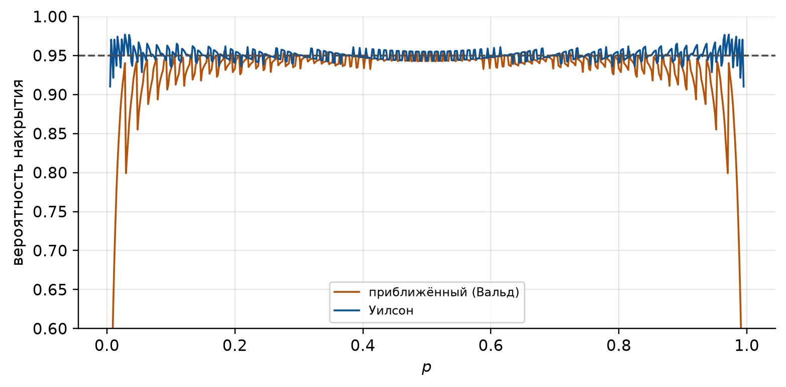

import numpy as np
import matplotlib.pyplot as plt
from math import ceil, sqrt
from scipy import stats
# Оформление графиков: шрифт с кириллицей и палитра, различимая при печати
PALETTE = ["#0b5394", "#b45309", "#2e7d32", "#7b1fa2", "#c62828", "#00838f"]
plt.rcParams.update({
"font.family": "sans-serif",
"font.sans-serif": ["DejaVu Sans", "Liberation Sans", "Noto Sans", "sans-serif"],
"axes.unicode_minus": False,
"axes.prop_cycle": plt.cycler(color=PALETTE),
"axes.spines.top": False,
"axes.spines.right": False,
"axes.grid": True,
"grid.alpha": 0.3,
"figure.dpi": 110,
"figure.constrained_layout.use": True,
})
# Генератор случайных чисел с фиксированным зерном: результаты воспроизводимы
rng = np.random.default_rng(2026)
def compare(name, a, b, labels=("задачник", "расчёт")):
"""Печатает два значения одной величины рядом, с подписями labels."""
print(f"{name:>20}: {labels[0]} {a:10.4f} {labels[1]} {b:10.4f}")
def show_ci(name, lo, hi, digits=3):
"""Печатает доверительный интервал в виде (lo; hi)."""
print(f"{name:>20}: ({lo:.{digits}f}; {hi:.{digits}f})")
def grouped_stats(values, counts):
"""Объём, среднее и исправленное с.к.о. s по статистическому ряду (варианты, частоты)."""
values, counts = np.asarray(values, dtype=float), np.asarray(counts)
n = counts.sum()
mean = (values * counts).sum() / n
s = sqrt(((values - mean) ** 2 * counts).sum() / (n - 1))
return n, mean, s
def level(gamma):
"""Уровень квантиля для двустороннего интервала с надёжностью gamma: (1 + gamma)/2."""
return (1 + gamma) / 2
def z_quantile(p):
"""Квантиль N(0, 1) уровня p: число z_p, при котором Phi(z_p) = p."""
return stats.norm.ppf(p)
def t_quantile(p, k):
"""Квантиль закона Стьюдента с k степенями свободы уровня p."""
return stats.t.ppf(p, k)
def mean_ci_sigma(xbar, sigma, n, gamma):
"""Интервал для mu при известном sigma: xbar -+ z_p sigma/sqrt(n), p = (1 + gamma)/2."""
delta = z_quantile(level(gamma)) * sigma / np.sqrt(n)
return xbar - delta, xbar + delta
def mean_ci_t(xbar, s, n, gamma):
"""Интервал для mu при неизвестном sigma: xbar -+ t_p(n - 1) s/sqrt(n), p = (1 + gamma)/2."""
delta = t_quantile(level(gamma), n - 1) * s / np.sqrt(n)
return xbar - delta, xbar + delta
def sigma_ci(s, n, gamma):
"""Интервал для sigma по s: границы sqrt((n-1)s^2/chi2) по квантилям chi2(n - 1)."""
alpha = 1 - gamma
k = n - 1
lo = s * np.sqrt(k / stats.chi2.ppf(1 - alpha / 2, k))
hi = s * np.sqrt(k / stats.chi2.ppf(alpha / 2, k))
return lo, hi
def wald_ci(m, n, gamma):
"""Приближённый интервал для p: w -+ z sqrt(w(1 - w)/n), w = m/n (для больших n)."""
w = np.asarray(m, dtype=float) / n
delta = z_quantile(level(gamma)) * np.sqrt(w * (1 - w) / n)
return w - delta, w + delta
def wilson_ci(m, n, gamma):
"""Интервал Уилсона для p: решение неравенства |w - p| < z sqrt(p(1 - p)/n) относительно p."""
w = np.asarray(m, dtype=float) / n
z = z_quantile(level(gamma))
centre = w + z**2 / (2 * n)
half = z * np.sqrt(w * (1 - w) / n + (z / (2 * n)) ** 2)
return (centre - half) * n / (n + z**2), (centre + half) * n / (n + z**2)
def coverage(ci, n, p, gamma):
"""Точная вероятность того, что интервал ci(m, n, gamma) накроет p, при m ~ Bin(n, p)."""
m = np.arange(n + 1)
lo, hi = ci(m, n, gamma)
covers = (lo < p) & (p < hi)
return (stats.binom.pmf(m, n, p) * covers).sum()9 Семинар 10. Интервальные оценки
Теория вероятностей и математическая статистика · НИЯУ МИФИ
Скачать PDF-раздатку этого семинара
9.1 Код для этой главы
Все импорты и функции, которые используются в примерах главы, собраны в одной ячейке. Выполните её первой: остальные ячейки опираются на неё.
9.2 Краткая сводка
На семинаре 9 параметр оценивали одним числом \(\hat\theta\). Такая оценка почти наверняка не совпадает с истинным значением, и само по себе число не говорит, насколько ему можно доверять. Интервальная оценка отвечает на этот вопрос: по выборке строят интервал, который накрывает параметр с заданной вероятностью.
Уведомление
Обозначения. В главе используются стандартные обозначения. В задачнике то же самое записано иначе:
| Здесь | Гмурман |
|---|---|
| \(\mu = \E X\), \(N(\mu, \sigma^2)\) | \(a\), \(\sigma\) |
| \(\bar x\) | \(\bar x_{\text{в}}\) |
| \(s\) (исправленное с.к.о., делитель \(n - 1\)) | \(s\) |
| доверительная вероятность \(\gamma = 1 - \alpha\) | надёжность \(\gamma\) |
| точность \(\delta\) (половина длины интервала) | точность \(\delta\) |
| \(z_p\): квантиль \(N(0, 1)\) уровня \(p\), \(\Phi(z_p) = p\); в интервале \(p = \frac{1 + \gamma}{2}\) | \(t\): \(\Phi(t) = \frac{\gamma}{2}\), \(\Phi\) есть функция Лапласа |
| \(t_p(k)\): квантиль закона Стьюдента с \(k\) степенями свободы; в интервале \(p = \frac{1 + \gamma}{2}\), \(k = n - 1\) | \(t_\gamma\), таблица прил. 3 по \(n\) (не по \(n - 1\)) и \(\gamma\) |
| \(\chi^2_p(k)\): квантиль закона \(\chi^2\); в интервале \(p = \frac{1 - \gamma}{2}\) и \(\frac{1 + \gamma}{2}\) | \(q\), таблица прил. 4 по \(n\) и \(\gamma\) |
| \(\hat p = m/n\) | \(w = m/n\) |
| \(\hat p_1 < p < \hat p_2\) | \(p_1 < p < p_2\) |
9.2.1 Доверительный интервал
Пусть \(\theta\) есть неизвестный параметр. Две функции выборки \(\hat\theta_1 < \hat\theta_2\) дают доверительный интервал с доверительной вероятностью (надёжностью) \(\gamma\), если \[ \Prob(\hat\theta_1 < \theta < \hat\theta_2) = \gamma . \] Обычно берут \(\gamma = 0{,}95\), \(0{,}99\) или \(0{,}999\).
Случайны здесь концы интервала, а \(\theta\) есть число. До опыта интервал накроет \(\theta\) с вероятностью \(\gamma\). После опыта интервал вычислен, и он либо накрывает \(\theta\), либо нет; \(\gamma\) теперь означает долю удачных интервалов, если опыт повторять много раз (задача 3).
Как строят интервал. Ищут величину, которая зависит от выборки и от \(\theta\), но закон которой от \(\theta\) не зависит (её называют центральной статистикой). По квантилям этого закона пишут неравенство с вероятностью \(\gamma\) и разрешают его относительно \(\theta\). Все интервалы главы получены так.
Квантиль. Квантилем уровня \(p\) закона с функцией распределения \(F\) называют число \(x_p\), при котором \(F(x_p) = p\): левее \(x_p\) лежит доля \(p\) вероятности. Для \(N(0, 1)\) пишем \(z_p\) (\(\Phi(z_p) = p\)), для закона Стьюдента \(t_p(k)\), для \(\chi^2\) \(\chi^2_p(k)\). Таблицы в конце сводки и функции ppf в scipy дают именно квантили по уровню \(p\).
Как найти нужный квантиль (двусторонний интервал):
- Надёжность \(\gamma\) дана в условии, например \(\gamma = 0{,}95\).
- Вне интервала остаётся \(1 - \gamma = 0{,}05\), поровну в двух хвостах: по \(\frac{1 - \gamma}{2} = 0{,}025\).
- Правая граница оставляет слева \(\gamma + \frac{1 - \gamma}{2}\), поэтому нужен квантиль уровня \(p = \frac{1 + \gamma}{2} = 0{,}975\).
- Берём квантиль этого уровня: \(z_{0{,}975} = 1{,}960\) (или \(t_{0{,}975}(n - 1)\), или пару \(\chi^2_{0{,}025}(n - 1)\), \(\chi^2_{0{,}975}(n - 1)\) для несимметричного закона).
| \(\gamma\) | 0,90 | 0,95 | 0,99 | 0,999 |
|---|---|---|---|---|
| уровень \(p = \frac{1+\gamma}{2}\) | 0,95 | 0,975 | 0,995 | 0,9995 |
| \(z_p\) | 1,645 | 1,960 | 2,576 | 3,291 |
9.2.2 Среднее \(\mu\) нормального закона при известном \(\sigma\)
\(\bar X \sim N(\mu, \sigma^2/n)\), поэтому \(Z = \frac{\bar X - \mu}{\sigma/\sqrt n} \sim N(0, 1)\) и \(\Prob(|Z| < z) = 2\Phi(z) - 1 = \gamma\) при \(\Phi(z) = \frac{1 + \gamma}{2}\), то есть \(z = z_{(1+\gamma)/2}\). Отсюда \[ \bar x - z\frac{\sigma}{\sqrt n} < \mu < \bar x + z\frac{\sigma}{\sqrt n}, \qquad \delta = z\frac{\sigma}{\sqrt n}, \qquad z = z_{(1+\gamma)/2} . \tag{9.1}\] Чтобы получить точность не хуже \(\delta\), нужен объём \(n \geqslant z^2\sigma^2/\delta^2\) (округляют вверх). Точность растёт как \(\sqrt n\): чтобы уменьшить \(\delta\) вдвое, выборку увеличивают вчетверо.
Откуда \(z\). Под плотностью \(N(0, 1)\) между \(-z\) и \(z\) должна лежать площадь \(\gamma\); оставшиеся \(1 - \gamma\) делятся поровну между хвостами, по \(\frac{1 - \gamma}{2}\) в каждом. Слева от \(z\) поэтому лежит \(\gamma + \frac{1 - \gamma}{2} = \frac{1 + \gamma}{2}\), это и есть \(\Phi(z)\): \(z\) есть квантиль уровня \(\frac{1 + \gamma}{2}\). Чем больше \(\gamma\), тем дальше \(z\) и тем шире интервал.
fig, axes = plt.subplots(1, 2, figsize=(7.5, 2.9), sharey=True)
grid = np.linspace(-4, 4, 800)
pdf = stats.norm.pdf(grid)
for ax, g in zip(axes, (0.95, 0.99)):
zg = z_quantile(level(g))
ax.plot(grid, pdf, color=PALETTE[0], lw=2)
ax.fill_between(grid, pdf, where=np.abs(grid) <= zg, color=PALETTE[0], alpha=0.25)
ax.fill_between(grid, pdf, where=np.abs(grid) >= zg, color=PALETTE[4], alpha=0.6)
ax.text(0, 0.13, f"$\\gamma = {g}$".replace(".", "{,}"), ha="center", fontsize=11)
tail = f"{(1 - g) / 2:.3f}".replace(".", ",")
for side in (-1, 1):
ax.annotate(tail, xy=(side * (zg + 0.25), 0.008), xytext=(side * 3.1, 0.12),
ha="center", fontsize=9, arrowprops={"arrowstyle": "->", "color": "0.4"})
zlabel = f"{zg:.3f}".replace(".", ",")
ax.set_xticks([-zg, 0, zg], [f"$-${zlabel}", "0", zlabel])
ax.set_xlabel("$x$")
axes[0].set_ylabel("плотность")
plt.show()
9.2.3 Закон \(\chi^2\)
Пусть \(Z_1, \dots, Z_k\) независимы и \(Z_i \sim N(0, 1)\). Закон суммы квадратов \[ \chi^2 = Z_1^2 + Z_2^2 + \dots + Z_k^2 \] называют законом \(\chi^2\) с \(k\) степенями свободы, \(\chi^2(k)\). Число степеней свободы есть число независимых квадратов в сумме.
- Величина неотрицательна. \(\E Z_i^2 = \Var Z_i = 1\), поэтому \(\E\chi^2 = k\); \(\Var Z_i^2 = \E Z_i^4 - 1 = 3 - 1 = 2\), поэтому \(\Var\chi^2 = 2k\).
- При \(k = 1\) и \(k = 2\) плотность убывает от нуля; при \(k \geqslant 3\) у неё горб около \(k - 2\) и длинный правый хвост. С ростом \(k\) закон по ЦПТ приближается к нормальному \(N(k, 2k)\), но при малых \(k\) заметно несимметричен.
- Квантили \(\chi^2_{\alpha/2}(k)\) и \(\chi^2_{1-\alpha/2}(k)\) поэтому расположены несимметрично относительно среднего \(k\); их берут из таблицы или из
scipyпо отдельности.
chi2_k = (1, 2, 5, 10)
chi2_sums = {k: (rng.standard_normal((100_000, k)) ** 2).sum(axis=1) for k in chi2_k}
fig, axes = plt.subplots(1, 4, figsize=(8, 2.7))
for ax, k in zip(axes, chi2_k):
right = k + 5 * sqrt(2 * k)
grid = np.linspace(0.01, right, 400)
ax.hist(chi2_sums[k], bins=60, range=(0, right), density=True, color=PALETTE[0], alpha=0.35)
ax.plot(grid, stats.chi2.pdf(grid, k), color=PALETTE[1], lw=2)
ax.axvline(k, color="0.3", ls="--", lw=1)
ax.set_title(f"$k = {k}$")
ax.set_ylim(0, 0.5 if k > 1 else 1.2)
ax.set_xlabel("$x$")
axes[0].set_ylabel("плотность")
plt.show()
Проверка: среднее и дисперсия смоделированных сумм против \(k\) и \(2k\).
for k in chi2_k:
compare(f"k = {k}, среднее", k, chi2_sums[k].mean(), labels=("k", "модель"))
compare(f"k = {k}, дисперсия", 2 * k, chi2_sums[k].var(), labels=("2k", "модель")) k = 1, среднее: k 1.0000 модель 0.9945
k = 1, дисперсия: 2k 2.0000 модель 1.9605
k = 2, среднее: k 2.0000 модель 2.0022
k = 2, дисперсия: 2k 4.0000 модель 4.0441
k = 5, среднее: k 5.0000 модель 4.9965
k = 5, дисперсия: 2k 10.0000 модель 9.9613
k = 10, среднее: k 10.0000 модель 10.0136
k = 10, дисперсия: 2k 20.0000 модель 20.18459.2.4 Закон Стьюдента
Пусть \(Z \sim N(0, 1)\) и \(V \sim \chi^2(k)\) независимы. Закон отношения \[ T = \frac{Z}{\sqrt{V/k}} \] называют законом Стьюдента с \(k\) степенями свободы, \(t(k)\).
- Плотность симметрична относительно нуля, \(\E T = 0\) при \(k > 1\), \(\Var T = \frac{k}{k - 2}\) при \(k > 2\): больше единицы.
- Знаменатель \(\sqrt{V/k}\) сам случаен. Когда он случайно мал, \(T\) получается большим, поэтому хвосты тяжелее, чем у \(N(0, 1)\), и квантили больше: \(t_{0{,}975}(4) = 2{,}776\) против \(z_{0{,}975} = 1{,}960\).
- \(V/k \to 1\) при \(k \to \infty\) (закон больших чисел), и \(t(k) \to N(0, 1)\). При \(k = 30\) квантиль \(t_{0{,}975}\) равен 2,042, уже близко к 1,960.
fig, (ax1, ax2) = plt.subplots(1, 2, figsize=(8, 3), gridspec_kw={"width_ratios": [1.3, 1]})
grid = np.linspace(-5, 5, 600)
ax1.plot(grid, stats.norm.pdf(grid), color="0.2", ls="--", lw=1.6, label="$N(0, 1)$")
for k, c in zip((1, 3, 10), PALETTE):
ax1.plot(grid, stats.t.pdf(grid, k), color=c, lw=1.8, label=f"$t({k})$")
ax1.set_xlabel("$x$")
ax1.set_ylabel("плотность")
ax1.legend(fontsize=8)
dfs = np.arange(2, 41)
ax2.plot(dfs, stats.t.ppf(0.975, dfs), "o-", ms=3, color=PALETTE[0], label="$t_{0{,}975}(k)$")
ax2.axhline(z_quantile(0.975), color=PALETTE[1], ls="--", lw=1.5, label="$z_{0{,}975} = 1{,}96$")
ax2.set_ylim(1.8, 4.5)
ax2.set_xlabel("число степеней свободы $k$")
ax2.legend(fontsize=8)
plt.show()
9.2.5 Выборка из нормального закона: теорема Фишера
Связь этих законов с выборкой даёт теорема Фишера. Если \(X_1, \dots, X_n\) независимы и \(X_i \sim N(\mu, \sigma^2)\), то
- \(\bar X \sim N\!\left(\mu, \frac{\sigma^2}{n}\right)\);
- \(\frac{(n - 1)s^2}{\sigma^2} = \sum_{i=1}^{n}\left(\frac{X_i - \bar X}{\sigma}\right)^2 \sim \chi^2(n - 1)\);
- \(\bar X\) и \(s^2\) независимы.
Почему \(n - 1\), а не \(n\): если подставить \(\mu\) вместо \(\bar X\), сумма состояла бы из \(n\) независимых квадратов \(N(0, 1)\) и имела бы закон \(\chi^2(n)\). Отклонения \(X_i - \bar X\) связаны условием \(\sum (X_i - \bar X) = 0\): зная \(n - 1\) из них, последнее находим сами. Одна степень свободы уходит на оценку \(\mu\) (та же причина, что и делитель \(n - 1\) в \(s^2\) на семинаре 9).
Из пунктов 1–3 и определения закона Стьюдента: \[ T = \frac{\bar X - \mu}{s/\sqrt n} = \frac{\dfrac{\bar X - \mu}{\sigma/\sqrt n}}{\sqrt{\dfrac{(n - 1)s^2}{\sigma^2}\Big/(n - 1)}} \sim t(n - 1) . \] В числителе \(N(0, 1)\), под корнем \(\chi^2(n - 1)\), делённое на число степеней свободы, и они независимы. \(\sigma\) сократилась, поэтому \(T\) можно считать по данным. На этом построены интервалы (Уравнение 9.2) и (Уравнение 9.3).
Проверка теоремы Фишера моделированием: 100 000 выборок объёма \(n = 5\) из \(N(10, 2^2)\).
n_f, mu_f, sigma_f = 5, 10.0, 2.0
x_f = rng.normal(mu_f, sigma_f, size=(100_000, n_f))
xbar_f, s_f = x_f.mean(axis=1), x_f.std(axis=1, ddof=1)
v_f = (n_f - 1) * s_f**2 / sigma_f**2
t_f = (xbar_f - mu_f) / (s_f / sqrt(n_f))
compare("E (n-1)s^2/sigma^2", n_f - 1, v_f.mean(), labels=("n - 1", "модель"))
compare("corr(xbar, s^2)", 0.0, np.corrcoef(xbar_f, s_f**2)[0, 1], labels=("теория", "модель"))
compare("P(|T| > 1,96)", 0.05, (np.abs(t_f) > z_quantile(0.975)).mean(), labels=("если N(0,1)", "модель"))
compare("P(|T| > t_0,975(4))", 0.05, (np.abs(t_f) > t_quantile(0.975, n_f - 1)).mean(), labels=("t(4)", "модель")) E (n-1)s^2/sigma^2: n - 1 4.0000 модель 3.9911
corr(xbar, s^2): теория 0.0000 модель -0.0041
P(|T| > 1,96): если N(0,1) 0.0500 модель 0.1212
P(|T| > t_0,975(4)): t(4) 0.0500 модель 0.0502Если бы \(T\) был нормальным, за \(\pm 1{,}96\) выходили бы 5 % значений; на деле выходят около 12 %. Интервал с \(z\) вместо \(t\) при \(n = 5\) накрывал бы \(\mu\) лишь примерно в 88 % случаев вместо 95 %.
fig, (ax1, ax2) = plt.subplots(1, 2, figsize=(8, 3))
grid = np.linspace(0.01, 20, 400)
ax1.hist(v_f, bins=80, range=(0, 20), density=True, color=PALETTE[0], alpha=0.35, label="модель")
ax1.plot(grid, stats.chi2.pdf(grid, n_f - 1), color=PALETTE[1], lw=2, label="$\\chi^2(4)$")
ax1.plot(grid, stats.chi2.pdf(grid, n_f), color=PALETTE[2], lw=1.6, ls="--", label="$\\chi^2(5)$")
ax1.set_xlabel("$(n-1)s^2/\\sigma^2$")
ax1.set_ylabel("плотность")
ax1.legend(fontsize=8)
grid = np.linspace(-6, 6, 600)
ax2.hist(t_f, bins=120, range=(-6, 6), density=True, color=PALETTE[0], alpha=0.35, label="модель")
ax2.plot(grid, stats.t.pdf(grid, n_f - 1), color=PALETTE[1], lw=2, label="$t(4)$")
ax2.plot(grid, stats.norm.pdf(grid), color=PALETTE[2], lw=1.6, ls="--", label="$N(0, 1)$")
ax2.set_xlabel("$T$")
ax2.legend(fontsize=8)
plt.show()
9.2.6 Среднее \(\mu\) при неизвестном \(\sigma\)
\(\sigma\) заменяют на \(s\). По теореме Фишера \(T = \frac{\bar X - \mu}{s/\sqrt n} \sim t(n - 1)\), и с \(t\), при котором \(\Prob(|T| < t) = \gamma\), \[ \bar x - t\frac{s}{\sqrt n} < \mu < \bar x + t\frac{s}{\sqrt n}, \qquad t = t_{(1+\gamma)/2}(n - 1) . \tag{9.2}\] Так как \(t > z\), интервал шире, чем при известном \(\sigma\): это плата за то, что \(\sigma\) тоже оценена. При малых \(n\) разница большая, при \(n \geqslant 30\) уже мала.
9.2.7 Стандартное отклонение \(\sigma\)
По теореме Фишера \(\frac{(n - 1)s^2}{\sigma^2} \sim \chi^2(n - 1)\). Отрезаем от этого закона по \(\alpha/2 = \frac{1 - \gamma}{2}\) с каждой стороны: с вероятностью \(\gamma\) \(\chi^2_{\alpha/2}(n - 1) < \frac{(n - 1)s^2}{\sigma^2} < \chi^2_{1-\alpha/2}(n - 1)\), где \(\alpha = 1 - \gamma\). Нужны два квантиля: уровней \(\frac{1 - \gamma}{2}\) и \(\frac{1 + \gamma}{2}\) (при \(\gamma = 0{,}95\) это 0,025 и 0,975). Разрешаем относительно \(\sigma\): \[ \sqrt{\frac{(n - 1)s^2}{\chi^2_{1-\alpha/2}(n - 1)}} < \sigma < \sqrt{\frac{(n - 1)s^2}{\chi^2_{\alpha/2}(n - 1)}} . \tag{9.3}\] Большему квантилю отвечает нижняя граница. Интервал несимметричен относительно \(s\): вверх он длиннее, чем вниз. Для \(\sigma^2\) берут те же границы без корня.
В задачнике интервал для \(\sigma\) ищут в виде \(s(1 - q) < \sigma < s(1 + q)\), симметричном относительно \(s\), с \(q\) из особой таблицы. Это другой интервал с той же надёжностью, поэтому ответы задачника в блоке C отличаются от наших; где они приведены, это отмечено.
9.2.8 Вероятность \(p\) по частоте
Событие появилось \(m\) раз в \(n\) независимых испытаниях, \(\hat p = m/n\). По теореме Муавра–Лапласа \(\frac{\hat p - p}{\sqrt{p(1 - p)/n}}\) примерно \(N(0, 1)\) при больших \(n\), и с вероятностью \(\approx\gamma\) \[ |\hat p - p| < z\sqrt{\frac{p(1 - p)}{n}} . \tag{9.4}\]
- Интервал Уилсона. Неравенство (Уравнение 9.4) квадратное относительно \(p\); его решение: \[ \hat p_{1,2} = \frac{n}{n + z^2}\left[\hat p + \frac{z^2}{2n} \mp z\sqrt{\frac{\hat p(1 - \hat p)}{n} + \left(\frac{z}{2n}\right)^2}\,\right]. \]
- Приближённый интервал (интервал Вальда). При \(n\) порядка сотен неизвестное \(p\) под корнем заменяют на \(\hat p\): \[ \hat p - z\sqrt{\frac{\hat p(1 - \hat p)}{n}} < p < \hat p + z\sqrt{\frac{\hat p(1 - \hat p)}{n}} . \] Он проще, но при \(\hat p\) близком к 0 или 1 врёт и может выйти за \([0, 1]\) (задача 9).
Справка: квантили для задач главы. В таблицах стоят квантили по уровню \(p\); уровень находят по надёжности, как описано выше. В книге те же числа считаются в scipy (stats.norm.ppf(p), stats.t.ppf(p, k), stats.chi2.ppf(p, k)).
Квантили \(z_p\) закона \(N(0, 1)\), \(\Phi(z_p) = p\):
| уровень \(p\) | 0,95 | 0,9625 | 0,975 | 0,9875 | 0,995 | 0,9995 |
|---|---|---|---|---|---|---|
| \(z_p\) | 1,645 | 1,780 | 1,960 | 2,241 | 2,576 | 3,291 |
| для \(\gamma = 2p - 1\) | 0,90 | 0,925 | 0,95 | 0,975 | 0,99 | 0,999 |
Квантили \(t_p(k)\) закона Стьюдента:
| \(k\) | \(p = 0{,}975\) | \(p = 0{,}995\) | \(p = 0{,}9995\) |
|---|---|---|---|
| 8 | 2,306 | 3,355 | 5,041 |
| 9 | 2,262 | 3,250 | 4,781 |
| 11 | 2,201 | 3,106 | 4,437 |
| 15 | 2,131 | 2,947 | 4,073 |
Квантили \(\chi^2_p(k)\) закона \(\chi^2\) (пара \(p\) и \(1 - p\) даёт двусторонний интервал с \(\gamma = 1 - 2p\)):
| \(k\) | \(p = 0{,}0005\) | \(0{,}005\) | \(0{,}025\) | \(0{,}975\) | \(0{,}995\) | \(0{,}9995\) |
|---|---|---|---|---|---|---|
| 9 | 0,972 | 1,735 | 2,700 | 19,023 | 23,589 | 29,666 |
| 11 | 1,587 | 2,603 | 3,816 | 21,920 | 26,757 | 33,137 |
| 15 | 3,108 | 4,601 | 6,262 | 27,488 | 32,801 | 39,719 |
| 49 | 22,789 | 27,249 | 31,555 | 70,222 | 78,231 | 88,231 |
Проверка: таблицы квантилей пересчитаны в scipy.
z_levels = (0.95, 0.9625, 0.975, 0.9875, 0.995, 0.9995)
print("z_p:", [round(float(z_quantile(p)), 3) for p in z_levels])
print("gamma = 2p - 1:", [round(2 * p - 1, 4) for p in z_levels])
for k in (8, 9, 11, 15):
print(f"t_p({k}):", [round(float(t_quantile(p, k)), 3) for p in (0.975, 0.995, 0.9995)])
for k in (9, 11, 15, 49):
print(f"chi2_p({k}):", [round(float(stats.chi2.ppf(p, k)), 3) for p in (0.0005, 0.005, 0.025, 0.975, 0.995, 0.9995)])z_p: [1.645, 1.78, 1.96, 2.241, 2.576, 3.291]
gamma = 2p - 1: [0.9, 0.925, 0.95, 0.975, 0.99, 0.999]
t_p(8): [2.306, 3.355, 5.041]
t_p(9): [2.262, 3.25, 4.781]
t_p(11): [2.201, 3.106, 4.437]
t_p(15): [2.131, 2.947, 4.073]
chi2_p(9): [0.972, 1.735, 2.7, 19.023, 23.589, 29.666]
chi2_p(11): [1.587, 2.603, 3.816, 21.92, 26.757, 33.137]
chi2_p(15): [3.108, 4.601, 6.262, 27.488, 32.801, 39.719]
chi2_p(49): [22.789, 27.249, 31.555, 70.222, 78.231, 88.231]9.3 Блок A. Среднее при известном \(\sigma\)
9.3.1 Задача 1 (Гмурман, гл. 10 § 4, № 502)
Найти доверительный интервал для оценки с надёжностью 0,99 неизвестного математического ожидания \(\mu\) нормально распределённого признака \(X\) генеральной совокупности, если известны генеральное среднее квадратическое отклонение \(\sigma\), выборочное среднее \(\bar x\) и объём выборки \(n\): а) \(\sigma = 4\), \(\bar x = 10{,}2\), \(n = 16\); б) \(\sigma = 5\), \(\bar x = 16{,}8\), \(n = 25\).
СоветРешение
\(\sigma\) известно, формула (Уравнение 9.1). \(\gamma = 0{,}99\), уровень \(\frac{1 + 0{,}99}{2} = 0{,}995\), квантиль \(z_{0{,}995} = 2{,}576\).
а) \(\delta = 2{,}576\cdot\frac{4}{\sqrt{16}} = 2{,}576\): \[ 7{,}62 < \mu < 12{,}78 . \]
б) \(\delta = 2{,}576\cdot\frac{5}{\sqrt{25}} = 2{,}576\): \[ 14{,}22 < \mu < 19{,}38 . \]
В задачнике \(7{,}63 < \mu < 12{,}77\) и \(14{,}23 < \mu < 19{,}37\): там квантиль взят из таблицы с двумя знаками, \(2{,}57\).
Проверка: интервалы по формуле (Уравнение 9.1).
show_ci("а)", *mean_ci_sigma(10.2, 4, 16, 0.99))
show_ci("б)", *mean_ci_sigma(16.8, 5, 25, 0.99)) а): (7.624; 12.776)
б): (14.224; 19.376)
ПредупреждениеТипичная ошибка
Взять квантиль уровня \(\gamma\) вместо \(\frac{1 + \gamma}{2}\): \(z_{0{,}99} = 2{,}326\). Тогда \(\Prob(|Z| < z) = 0{,}98\), а не \(0{,}99\): вероятность \(1 - \gamma\) делится поровну между двумя хвостами.
УведомлениеДля самопроверки
(Гмурман, № 501.) То же при \(\gamma = 0{,}95\), \(\sigma = 5\), \(\bar x = 14\), \(n = 25\). Ответ: \(12{,}04 < \mu < 15{,}96\).
9.3.2 Задача 2 (Гмурман, гл. 10 § 4, № 505, 507)
а) Станок-автомат штампует валики. По выборке объёма \(n = 100\) вычислена выборочная средняя диаметров изготовленных валиков. Найти с надёжностью 0,95 точность \(\delta\), с которой выборочная средняя оценивает математическое ожидание диаметров изготовляемых валиков, зная, что их среднее квадратическое отклонение \(\sigma = 2\) мм. Предполагается, что диаметры валиков распределены нормально.
б) Найти минимальный объём выборки, при котором с надёжностью 0,925 точность оценки математического ожидания нормально распределённой генеральной совокупности по выборочной средней равна 0,2, если известно среднее квадратическое отклонение генеральной совокупности \(\sigma = 1{,}5\).
СоветРешение
а) \(\gamma = 0{,}95\), уровень \(\frac{1 + 0{,}95}{2} = 0{,}975\), квантиль \(z_{0{,}975} = 1{,}96\). Тогда \(\delta = z\frac{\sigma}{\sqrt n} = 1{,}96\cdot\frac{2}{10} = 0{,}392\) мм.
б) Из \(\delta = z\sigma/\sqrt n\) получаем \(n = z^2\sigma^2/\delta^2\). \(\gamma = 0{,}925\), уровень \(\frac{1 + 0{,}925}{2} = 0{,}9625\), \(z_{0{,}9625} = 1{,}780\): \[ n = \frac{1{,}780^2\cdot 1{,}5^2}{0{,}2^2} \approx 178{,}3 . \] Объём есть целое число, и точность должна быть не хуже 0,2, поэтому округляем вверх: \(n = 179\).
Проверка: формулы для \(\delta\) и \(n\).
print(f"а) уровень {level(0.95)}, z = {z_quantile(level(0.95)):.4f}, delta = {z_quantile(0.975) * 2 / sqrt(100):.4f} мм")
print(f"б) уровень {level(0.925)}, z = {z_quantile(level(0.925)):.4f}")
n_exact = (z_quantile(level(0.925)) * 1.5 / 0.2) ** 2
print(f"б) n = {n_exact:.2f}, берём {ceil(n_exact)}")а) уровень 0.975, z = 1.9600, delta = 0.3920 мм
б) уровень 0.9625, z = 1.7805
б) n = 178.32, берём 1799.3.3 Задача 3
Длина детали распределена нормально, \(\sigma = 0{,}5\) мм. По 25 деталям получено \(\bar x = 20{,}3\) мм.
а) Найти доверительный интервал для \(\mu\) с надёжностью 0,95.
б) Верно ли утверждение: «\(\mu\) лежит в найденном интервале с вероятностью 0,95»? Как правильно понимать число 0,95?
в) Как изменится точность, если взять \(\gamma = 0{,}99\)? Если при \(\gamma = 0{,}95\) измерить не 25, а 100 деталей?
г) Сколько деталей нужно измерить, чтобы при \(\gamma = 0{,}95\) точность была не хуже 0,05 мм?
СоветРешение
а) Уровень \(\frac{1 + 0{,}95}{2} = 0{,}975\), \(z_{0{,}975} = 1{,}96\); \(\delta = 1{,}96\cdot\frac{0{,}5}{5} = 0{,}196\) мм, \(20{,}104 < \mu < 20{,}496\).
б) Нет. \(\mu\) есть число, а не случайная величина; найденный интервал тоже числа. Он либо накрывает \(\mu\), либо нет, и мы не знаем, что из двух. Вероятность 0,95 относится к способу: если повторять опыт (25 новых деталей, новый интервал), то 95 % построенных так интервалов накроют \(\mu\), а 5 % нет. Говорят: «интервал накрывает \(\mu\) с надёжностью 0,95».
в) При \(\gamma = 0{,}99\) уровень 0,995, \(z_{0{,}995} = 2{,}576\): \(\delta = 2{,}576\cdot 0{,}1 = 0{,}258\) мм, в \(2{,}576/1{,}96 \approx 1{,}31\) раза хуже: за большую надёжность платим шириной. При \(n = 100\): \(\delta = 1{,}96\cdot 0{,}05 = 0{,}098\) мм, вдвое лучше (объём вчетверо больше, \(\sqrt 4 = 2\)).
г) \(n \geqslant \frac{1{,}96^2\cdot 0{,}5^2}{0{,}05^2} = 384{,}2\): нужно \(n = 385\).
Проверка: 100 выборок по 25 деталей при \(\mu = 20{,}2\) мм; считаем, сколько интервалов накрыли \(\mu\), и долю на 100 000 выборках.
mu_true, sigma, n = 20.2, 0.5, 25
show_ci("а)", *mean_ci_sigma(20.3, sigma, n, 0.95))
xbar_many = rng.normal(mu_true, sigma, size=(100_000, n)).mean(axis=1)
lo_many, hi_many = mean_ci_sigma(xbar_many, sigma, n, 0.95)
covered = (lo_many < mu_true) & (mu_true < hi_many)
print(f"накрыли mu: {covered[:100].sum()} из первых 100; доля по 100 000: {covered.mean():.4f}")
print(f"г) n = {(1.96 * sigma / 0.05) ** 2:.1f}, берём {ceil((z_quantile(0.975) * sigma / 0.05) ** 2)}") а): (20.104; 20.496)
накрыли mu: 92 из первых 100; доля по 100 000: 0.9505
г) n = 384.2, берём 385fig, ax = plt.subplots(figsize=(7, 3.6))
idx = np.arange(100)
colors = np.where(covered[:100], PALETTE[0], PALETTE[4])
ax.vlines(idx, lo_many[:100], hi_many[:100], colors=colors, lw=1.6)
ax.plot(idx, xbar_many[:100], "o", ms=2.5, color="0.3")
ax.axhline(mu_true, color=PALETTE[1], ls="--", lw=1.5, label="$\\mu = 20{,}2$")
ax.set_xlabel("номер выборки")
ax.set_ylabel("длина, мм")
ax.legend(loc="upper right", fontsize=8)
plt.show()
ПредупреждениеТипичная ошибка
Округлить объём по правилам арифметики: 384,2 до 384. При \(n = 384\) точность чуть хуже требуемой; объём всегда округляют вверх.
9.4 Блок B. Среднее при неизвестном \(\sigma\)
9.4.1 Задача 4 (Гмурман, гл. 10 § 4, № 509)
Из генеральной совокупности извлечена выборка объёма \(n = 12\):
| \(x_i\) | \(-0{,}5\) | \(-0{,}4\) | \(-0{,}2\) | 0 | 0,2 | 0,6 | 0,8 | 1 | 1,2 | 1,5 |
|---|---|---|---|---|---|---|---|---|---|---|
| \(n_i\) | 1 | 2 | 1 | 1 | 1 | 1 | 1 | 1 | 2 | 1 |
Оценить с надёжностью 0,95 математическое ожидание \(\mu\) нормально распределённого признака генеральной совокупности с помощью доверительного интервала.
СоветРешение
\(\sigma\) не известно, формула (Уравнение 9.2). По ряду: \[ \bar x = \frac{\sum n_ix_i}{n} = \frac{5}{12} \approx 0{,}417, \qquad s = \sqrt{\frac{\sum n_i(x_i - \bar x)^2}{n - 1}} \approx 0{,}720 . \] Степеней свободы \(n - 1 = 11\), уровень \(\frac{1 + 0{,}95}{2} = 0{,}975\), \(t_{0{,}975}(11) = 2{,}201\), \(\delta = 2{,}201\cdot\frac{0{,}720}{\sqrt{12}} \approx 0{,}457\): \[ -0{,}04 < \mu < 0{,}87 . \] В задачнике \(-0{,}04 < \mu < 0{,}88\): там \(\bar x\) и \(s\) округлены до 0,42 и 0,72 до подстановки.
Проверка: \(\bar x\), \(s\) и интервал по ряду.
n4, xbar4, s4 = grouped_stats([-0.5, -0.4, -0.2, 0, 0.2, 0.6, 0.8, 1, 1.2, 1.5], [1, 2, 1, 1, 1, 1, 1, 1, 2, 1])
print(f"n = {n4}, xbar = {xbar4:.4f}, s = {s4:.4f}, t_0,975({n4 - 1}) = {t_quantile(0.975, n4 - 1):.3f}")
show_ci("mu", *mean_ci_t(xbar4, s4, n4, 0.95))n = 12, xbar = 0.4167, s = 0.7196, t_0,975(11) = 2.201
mu: (-0.041; 0.874)
УведомлениеДля самопроверки
(Гмурман, № 508.) Выборка объёма \(n = 10\): варианты \(-2\), 1, 2, 3, 4, 5 с частотами 2, 1, 2, 2, 2, 1. Оценить \(\mu\) с надёжностью 0,95. Ответ: \(\bar x = 2\), \(s = 2{,}40\), \(t_{0{,}975}(9) = 2{,}262\), \(0{,}28 < \mu < 3{,}72\).
9.4.2 Задача 5 (Гмурман, гл. 10 § 4, № 510)
По данным девяти независимых равноточных измерений некоторой физической величины найдены среднее арифметическое результатов измерений \(\bar x = 30{,}1\) и исправленное среднее квадратическое отклонение \(s = 6\). Оценить истинное значение измеряемой величины с помощью доверительного интервала с надёжностью \(\gamma = 0{,}99\). Предполагается, что результаты измерений распределены нормально.
СоветРешение
Истинное значение измеряемой величины есть её математическое ожидание \(\mu\) (измерения без систематической ошибки). \(\sigma\) не известно, степеней свободы \(9 - 1 = 8\), уровень \(\frac{1 + 0{,}99}{2} = 0{,}995\), \(t_{0{,}995}(8) = 3{,}355\): \[ \delta = 3{,}355\cdot\frac{6}{\sqrt 9} = 6{,}71, \qquad 23{,}39 < \mu < 36{,}81 . \]
В решении задачника стоит \(t_\gamma = 2{,}36\) и ответ \(25{,}38 < \mu < 34{,}82\). Это опечатка: по таблице приложения 3 при \(n = 9\) и \(\gamma = 0{,}99\) \(t_\gamma = 3{,}36\). Значение 2,36 близко к квантилю для \(\gamma = 0{,}95\) (2,306), и интервал с ним вышел бы с надёжностью около 0,95, а не 0,99.
Проверка: интервал по Стьюденту и для сравнения по нормальному закону, как если бы \(s\) было точным \(\sigma\).
show_ci("Стьюдент", *mean_ci_t(30.1, 6, 9, 0.99), digits=2)
show_ci("нормальный (ошибка)", *mean_ci_sigma(30.1, 6, 9, 0.99), digits=2)
compare("t при 2,36 даёт g", 0.99, 2 * stats.t.cdf(2.36, 8) - 1, labels=("нужно", "вышло")) Стьюдент: (23.39; 36.81)
нормальный (ошибка): (24.95; 35.25)
t при 2,36 даёт g: нужно 0.9900 вышло 0.9540fig, ax = plt.subplots(figsize=(6.5, 3.2))
grid = np.linspace(-5, 5, 600)
ax.plot(grid, stats.norm.pdf(grid), color=PALETTE[1], ls="--", lw=1.8, label="$N(0, 1)$")
ax.plot(grid, stats.t.pdf(grid, 8), color=PALETTE[0], lw=2, label="Стьюдент, 8 ст. св.")
for q, c in [(z_quantile(0.995), PALETTE[1]), (t_quantile(0.995, 8), PALETTE[0])]:
ax.axvline(q, color=c, ls=":", lw=1.3)
ax.axvline(-q, color=c, ls=":", lw=1.3)
ax.set_xlabel("$x$")
ax.set_ylabel("плотность")
ax.legend(fontsize=8)
plt.show()
ПредупреждениеТипичная ошибка
Подставить \(s\) вместо \(\sigma\) в формулу (Уравнение 9.1) с нормальным \(z\). Здесь это дало бы \(24{,}95 < \mu < 35{,}25\): интервал заметно уже, и его настоящая надёжность меньше 0,99. При малых \(n\) нужен закон Стьюдента. Вторая частая ошибка: войти в таблицу с \(n\) вместо \(n - 1\) степеней свободы (в таблице задачника вход по \(n\), в стандартных таблицах и в scipy по числу степеней свободы).
9.5 Блок C. Стандартное отклонение
9.5.1 Задача 6 (Гмурман, гл. 10 § 4, № 512)
По данным выборки объёма \(n = 16\) из генеральной совокупности найдено исправленное среднее квадратическое отклонение \(s = 1\) нормально распределённого количественного признака. Найти доверительный интервал, покрывающий генеральное среднее квадратическое отклонение \(\sigma\) с надёжностью 0,95.
СоветРешение
Формула (Уравнение 9.3). Степеней свободы 15; \(\gamma = 0{,}95\), в каждом хвосте \(0{,}025\), нужны квантили уровней 0,025 и 0,975: \(\chi^2_{0{,}025}(15) = 6{,}262\), \(\chi^2_{0{,}975}(15) = 27{,}488\). \[ \sqrt{\frac{15\cdot 1}{27{,}488}} < \sigma < \sqrt{\frac{15\cdot 1}{6{,}262}}, \qquad 0{,}74 < \sigma < 1{,}55 . \] Интервал несимметричен: от \(s = 1\) вниз на 0,26, вверх на 0,55.
В задачнике интервал \(s(1 - q) < \sigma < s(1 + q)\) с \(q = 0{,}44\) из таблицы: \(0{,}56 < \sigma < 1{,}44\). У него та же надёжность 0,95, но он симметричен относительно \(s\) и поэтому длиннее (0,88 против 0,81).
Проверка: интервал по \(\chi^2\) и доля накрытий \(\sigma\) на 100 000 выборках объёма 16.
show_ci("sigma", *sigma_ci(1, 16, 0.95))
s_many = rng.normal(0, 1, size=(100_000, 16)).std(axis=1, ddof=1)
lo6, hi6 = sigma_ci(s_many, 16, 0.95)
print(f"доля интервалов, накрывших sigma = 1: {((lo6 < 1) & (1 < hi6)).mean():.4f}") sigma: (0.739; 1.548)
доля интервалов, накрывших sigma = 1: 0.9505fig, ax = plt.subplots(figsize=(6.5, 3.2))
k6 = 15
grid = np.linspace(0, 40, 600)
lo_q, hi_q = stats.chi2.ppf([0.025, 0.975], k6)
ax.plot(grid, stats.chi2.pdf(grid, k6), color=PALETTE[0], lw=2)
ax.fill_between(grid, stats.chi2.pdf(grid, k6), where=(grid < lo_q) | (grid > hi_q), color=PALETTE[4], alpha=0.4, label="по 2,5 %")
ax.axvline(lo_q, color=PALETTE[4], ls=":", lw=1.3)
ax.axvline(hi_q, color=PALETTE[4], ls=":", lw=1.3)
ax.set_xlabel("$x$")
ax.set_ylabel("плотность")
ax.legend(fontsize=8)
plt.show()
ПредупреждениеТипичная ошибка
Перепутать квантили: нижнюю границу \(\sigma\) дают делением на больший квантиль \(\chi^2_{1-\alpha/2}\). Если нижняя граница вышла больше верхней, квантили переставлены.
9.5.2 Задача 7 (Гмурман, гл. 10 § 4, № 514)
Произведено 12 измерений одним прибором (без систематической ошибки) некоторой физической величины, причём исправленное среднее квадратическое отклонение \(s\) случайных ошибок измерений оказалось равным 0,6. Найти точность прибора с надёжностью 0,99. Предполагается, что результаты измерений распределены нормально.
СоветРешение
Точность прибора характеризуется средним квадратическим отклонением \(\sigma\) случайных ошибок измерений, поэтому нужен доверительный интервал для \(\sigma\). Степеней свободы 11; \(\gamma = 0{,}99\), нужны квантили уровней 0,005 и 0,995: \(\chi^2_{0{,}005}(11) = 2{,}603\), \(\chi^2_{0{,}995}(11) = 26{,}757\). \[ 0{,}6\sqrt{\frac{11}{26{,}757}} < \sigma < 0{,}6\sqrt{\frac{11}{2{,}603}}, \qquad 0{,}38 < \sigma < 1{,}23 . \] В задачнике (\(q = 0{,}9\)): \(0{,}06 < \sigma < 1{,}14\). При малом \(n\) и большой надёжности симметричный интервал \(s(1 \pm q)\) почти упирается в ноль, что о приборе ничего не говорит; интервал по \(\chi^2\) информативнее.
Проверка: интервал по формуле (Уравнение 9.3).
show_ci("sigma", *sigma_ci(0.6, 12, 0.99)) sigma: (0.385; 1.233)9.6 Блок D. Вероятность по частоте
9.6.1 Задача 8 (Гмурман, гл. 10 § 4, № 516)
Производятся независимые испытания с одинаковой, но неизвестной вероятностью \(p\) появления события \(A\) в каждом испытании. Найти доверительный интервал для оценки вероятности \(p\) с надёжностью 0,95, если в 60 испытаниях событие \(A\) появилось 15 раз.
СоветРешение
\(n = 60\), \(\hat p = 15/60 = 0{,}25\), \(z = z_{0{,}975} = 1{,}96\), \(z^2/(2n) = 0{,}032\), \(n/(n + z^2) = 0{,}940\). \[ \hat p_{1,2} = 0{,}940\left[0{,}25 + 0{,}032 \mp 1{,}96\sqrt{\frac{0{,}25\cdot 0{,}75}{60} + \left(\frac{1{,}96}{120}\right)^2}\,\right] = 0{,}940\,[0{,}282 \mp 0{,}114], \] интервал Уилсона \(0{,}16 < p < 0{,}37\).
Приближённый интервал: \(0{,}25 \mp 1{,}96\sqrt{0{,}25\cdot 0{,}75/60} = 0{,}25 \mp 0{,}110\), \(0{,}14 < p < 0{,}36\). При \(n = 60\) два интервала уже заметно расходятся: интервал Уилсона сдвинут к \(1/2\).
Проверка: оба интервала по формулам.
show_ci("Уилсон", *wilson_ci(15, 60, 0.95))
show_ci("приближённый", *wald_ci(15, 60, 0.95)) Уилсон: (0.158; 0.372)
приближённый: (0.140; 0.360)9.6.2 Задача 9 (Гмурман, гл. 10 § 4, № 518)
Изготовлен экспериментальный игровой автомат, который должен обеспечить появление выигрыша в одном случае из 100 бросаний монеты в автомат. Для проверки пригодности автомата произведено 400 испытаний, причём выигрыш появился 5 раз. Найти доверительный интервал, покрывающий неизвестную вероятность появления выигрыша с надёжностью \(\gamma = 0{,}999\). Согласуются ли данные с тем, что автомат исправен?
СоветРешение
\(\hat p = 5/400 = 0{,}0125\); уровень \(\frac{1 + 0{,}999}{2} = 0{,}9995\), \(z = z_{0{,}9995} = 3{,}291\).
Приближённый интервал: \(0{,}0125 \mp 3{,}291\sqrt{\frac{0{,}0125\cdot 0{,}9875}{400}} = 0{,}0125 \mp 0{,}0182\), то есть \(-0{,}0057 < p < 0{,}0307\). Отрицательная граница бессмысленна; её заменяют нулём и получают \(0 < p < 0{,}031\) (так в задачнике).
Интервал Уилсона: \(0{,}0032 < p < 0{,}0475\). Он не выходит за \([0, 1]\) и несимметричен относительно \(\hat p\), как и сам закон числа выигрышей при малом \(p\).
Заданная вероятность \(p = 0{,}01\) лежит в обоих интервалах: данные не противоречат тому, что автомат исправен.
Приближённый интервал опирается на нормальное приближение с \(\hat p\) под корнем. При \(n\hat p = 5\) это приближение грубое, и интервал Вальда накрывает \(p\) заметно реже, чем обещает \(\gamma\). Ниже точная вероятность накрытия для обоих интервалов при \(n = 400\).
Проверка: оба интервала и их точная вероятность накрытия при \(p = 0{,}01\) и \(p = 0{,}0125\).
show_ci("приближённый", *wald_ci(5, 400, 0.999), digits=4)
show_ci("Уилсон", *wilson_ci(5, 400, 0.999), digits=4)
for p in (0.01, 0.0125):
compare(f"накрытие, p = {p}", coverage(wald_ci, 400, p, 0.999), coverage(wilson_ci, 400, p, 0.999), labels=("Вальд", "Уилсон")) приближённый: (-0.0058; 0.0308)
Уилсон: (0.0032; 0.0475)
накрытие, p = 0.01: Вальд 0.9820 Уилсон 0.9973
накрытие, p = 0.0125: Вальд 0.9604 Уилсон 0.9981fig, ax = plt.subplots(figsize=(7, 3.4))
p_grid = np.linspace(0.005, 0.995, 600)
ax.plot(p_grid, [coverage(wald_ci, 100, p, 0.95) for p in p_grid], color=PALETTE[1], lw=1.2, label="приближённый (Вальд)")
ax.plot(p_grid, [coverage(wilson_ci, 100, p, 0.95) for p in p_grid], color=PALETTE[0], lw=1.2, label="Уилсон")
ax.axhline(0.95, color="0.3", ls="--", lw=1.2)
ax.set_ylim(0.6, 1.0)
ax.set_xlabel("$p$")
ax.set_ylabel("вероятность накрытия")
ax.legend(fontsize=8, loc="lower center")
plt.show()
9.6.3 Задача 10
Социологи хотят оценить долю \(p\) сторонников некоторого решения с точностью \(\delta = 0{,}03\) при надёжности 0,95 (по приближённой формуле).
а) Сколько человек нужно опросить, если о \(p\) ничего не известно?
б) Сколько, если заранее известно, что \(p \leqslant 0{,}1\)?
СоветРешение
По приближённой формуле \(\delta = z\sqrt{p(1 - p)/n}\) с \(z = z_{0{,}975} = 1{,}96\), откуда \(n = z^2 p(1 - p)/\delta^2\). Произведение \(p(1 - p)\) неизвестно, поэтому берут его наибольшее значение на допустимых \(p\).
а) \(p(1 - p) \leqslant 1/4\) (максимум при \(p = 1/2\)): \[ n \geqslant \frac{1{,}96^2}{4\cdot 0{,}03^2} = 1067{,}1, \qquad n = 1068 . \] Отсюда типичный размер опроса «около тысячи человек» и погрешность «плюс-минус 3 %».
б) При \(p \leqslant 0{,}1\) функция \(p(1 - p)\) возрастает, наибольшее значение \(0{,}1\cdot 0{,}9 = 0{,}09\): \[ n \geqslant \frac{1{,}96^2\cdot 0{,}09}{0{,}03^2} = 384{,}2, \qquad n = 385 . \]
Проверка: объёмы по формуле.
z10 = z_quantile(level(0.95))
for name, pq in [("а) p(1-p) = 1/4", 0.25), ("б) p(1-p) = 0,09", 0.09)]:
n_exact = z10**2 * pq / 0.03**2
print(f"{name}: n = {n_exact:.1f}, берём {ceil(n_exact)}")а) p(1-p) = 1/4: n = 1067.1, берём 1068
б) p(1-p) = 0,09: n = 384.1, берём 3859.7 Задачи для самостоятельной работы
- (Гмурман, № 503.) Одним и тем же прибором со средним квадратическим отклонением случайных ошибок измерений \(\sigma = 40\) м произведено пять равноточных измерений расстояния от орудия до цели. Найти доверительный интервал для оценки истинного расстояния \(\mu\) до цели с надёжностью \(\gamma = 0{,}95\), зная среднее арифметическое результатов измерений \(\bar x = 2000\) м. Предполагается, что результаты измерений распределены нормально.
- (Гмурман, № 504.) Выборка из большой партии электроламп содержит 100 ламп. Средняя продолжительность горения лампы выборки оказалась равной 1000 ч. Найти с надёжностью 0,95 доверительный интервал для средней продолжительности \(\mu\) горения лампы всей партии, если известно, что среднее квадратическое отклонение продолжительности горения лампы \(\sigma = 40\) ч. Предполагается, что продолжительность горения ламп распределена нормально.
- (Гмурман, № 511.) По данным 16 независимых равноточных измерений некоторой физической величины найдены среднее арифметическое результатов измерений \(\bar x = 42{,}8\) и исправленное среднее квадратическое отклонение \(s = 8\). Оценить истинное значение измеряемой величины с надёжностью \(\gamma = 0{,}999\).
- (Гмурман, № 513.) По данным выборки объёма \(n\) из генеральной совокупности нормально распределённого количественного признака найдено исправленное среднее квадратическое отклонение \(s\). Найти доверительный интервал, покрывающий генеральное среднее квадратическое отклонение \(\sigma\) с надёжностью 0,999, если: а) \(n = 10\), \(s = 5{,}1\); б) \(n = 50\), \(s = 14\).
- (Гмурман, № 515.) Произведено 10 измерений одним прибором (без систематической ошибки) некоторой физической величины, причём исправленное среднее квадратическое отклонение \(s\) случайных ошибок измерений оказалось равным 0,8. Найти точность прибора с надёжностью 0,95. Предполагается, что результаты измерений распределены нормально.
- (Гмурман, № 517.) Производятся независимые испытания с одинаковой, но неизвестной вероятностью \(p\) появления события \(A\) в каждом испытании. Найти доверительный интервал для оценки вероятности \(p\) с надёжностью 0,99, если в 100 испытаниях событие \(A\) появилось 60 раз.
- (Гмурман, № 520.) В 360 испытаниях, в каждом из которых вероятность появления события одинакова и неизвестна, событие \(A\) появилось 270 раз. Найти доверительный интервал, покрывающий неизвестную вероятность \(p\) с надёжностью 0,95.
- (Гмурман, № 522.) При испытаниях 1000 элементов зарегистрировано 100 отказов. Найти доверительный интервал, покрывающий неизвестную вероятность \(p\) отказа элемента с надёжностью: а) 0,95; б) 0,99.
СоветОтветы
- \(\delta = 1{,}96\cdot 40/\sqrt 5 = 35{,}06\) м; \(1964{,}94 < \mu < 2035{,}06\).
- \(\delta = 1{,}96\cdot 40/10 = 7{,}84\) ч; \(992{,}16 < \mu < 1007{,}84\).
- \(t_{0{,}9995}(15) = 4{,}073\), \(\delta = 8{,}15\); \(34{,}65 < \mu < 50{,}95\) (в задачнике \(34{,}66 < \mu < 50{,}94\), \(t = 4{,}07\)).
- По \(\chi^2\): а) \(\chi^2_{0{,}0005}(9) = 0{,}972\), \(\chi^2_{0{,}9995}(9) = 29{,}666\), \(2{,}81 < \sigma < 15{,}52\); б) \(\chi^2_{0{,}0005}(49) = 22{,}789\), \(\chi^2_{0{,}9995}(49) = 88{,}231\), \(10{,}43 < \sigma < 20{,}53\). В задачнике по таблице \(q\): а) \(0 < \sigma < 14{,}28\); б) \(7{,}98 < \sigma < 20{,}02\).
- \(0{,}55 < \sigma < 1{,}46\) (в задачнике по \(q\): \(0{,}28 < \sigma < 1{,}32\)).
- Уилсон: \(0{,}47 < p < 0{,}72\); приближённый: \(0{,}47 < p < 0{,}73\).
- \(n\) велико, приближённый интервал: \(0{,}705 < p < 0{,}795\) (Уилсон \(0{,}703 < p < 0{,}792\)).
- Приближённый: а) \(0{,}081 < p < 0{,}119\); б) \(0{,}076 < p < 0{,}124\). Уилсон: а) \(0{,}083 < p < 0{,}120\); б) \(0{,}078 < p < 0{,}127\).
Проверка: ответы к задачам для самостоятельной работы.
show_ci("1", *mean_ci_sigma(2000, 40, 5, 0.95), digits=2)
show_ci("2", *mean_ci_sigma(1000, 40, 100, 0.95), digits=2)
show_ci("3", *mean_ci_t(42.8, 8, 16, 0.999), digits=2)
show_ci("4а", *sigma_ci(5.1, 10, 0.999), digits=2)
show_ci("4б", *sigma_ci(14, 50, 0.999), digits=2)
show_ci("5", *sigma_ci(0.8, 10, 0.95), digits=2)
for label, m, n, g in [("6", 60, 100, 0.99), ("7", 270, 360, 0.95), ("8а", 100, 1000, 0.95), ("8б", 100, 1000, 0.99)]:
show_ci(label + " Уилсон", *wilson_ci(m, n, g))
show_ci(label + " приближённый", *wald_ci(m, n, g)) 1: (1964.94; 2035.06)
2: (992.16; 1007.84)
3: (34.65; 50.95)
4а: (2.81; 15.52)
4б: (10.43; 20.53)
5: (0.55; 1.46)
6 Уилсон: (0.471; 0.716)
6 приближённый: (0.474; 0.726)
7 Уилсон: (0.703; 0.792)
7 приближённый: (0.705; 0.795)
8а Уилсон: (0.083; 0.120)
8а приближённый: (0.081; 0.119)
8б Уилсон: (0.078; 0.127)
8б приближённый: (0.076; 0.124)